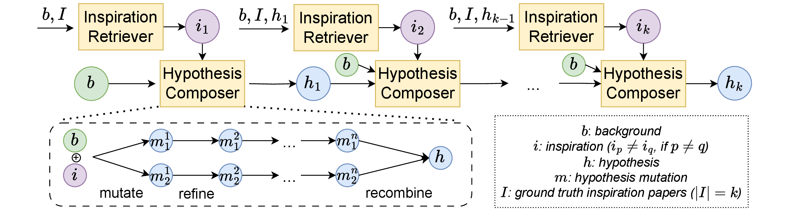
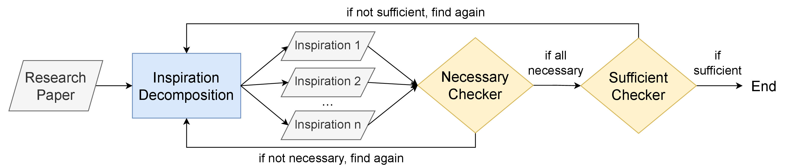

Benchmarking LLMs in Scientific Discovery via Inspiration-Based Task Decomposition
1Fudan University 2Shanghai AI Laboratory 3Nanyang Technological University 4UNSW 5NUS 6Wuhan University
*Equal contribution · †Corresponding author
liuyujie.cs@gmail.com · {zonglin001,cambria}@ntu.edu.sg · zhoudongzhan@pjlab.org.cn
ResearchBench is accepted to ACL 2026 (Findings). Thanks to all my collaborators! 🎉🎉🎉
Large language models (LLMs) have shown potential in assisting scientific research, yet their ability to discover high-quality research hypotheses remains unexamined due to the lack of a dedicated benchmark. To address this gap, we introduce the first large-scale benchmark for evaluating LLMs on a sufficient set of scientific discovery sub-tasks—inspiration retrieval, hypothesis composition, and hypothesis ranking—where sufficient means that perfectly solving these sub-tasks perfectly solves the overall discovery task. We develop an automated LLM-based framework that extracts critical components—research questions, background surveys, inspirations, and hypotheses—from papers across 12 disciplines, with expert validation confirming its accuracy. To prevent data contamination, we focus exclusively on publications from 2024 onward, ensuring minimal overlap with LLM pretraining data; our automated framework further enables automatic extraction of even more recent papers as LLM pretraining cutoffs advance, supporting scalable and contamination-free automatic renewal of this discovery benchmark. Our evaluation shows that, across disciplines, LLMs excel at inspiration retrieval—an out-of-distribution task—suggesting their ability to surface novel knowledge associations.
Papers from Nature, Science, and venues of a similar level — all published in 2024 or later. Extracted automatically so the benchmark stays contamination-resistant as model cutoffs advance.
| Model | Cutoff | Released |
|---|---|---|
| GPT-4o | Oct 2023 | May 2024 |
| GPT-4o Mini | Oct 2023 | Jul 2024 |
| Llama-3.1-8B | Dec 2023 | Jul 2024 |
| Llama-3.1-70B | Dec 2023 | Jul 2024 |
| Llama-3.2-1B | — | Sep 2024 |
| Claude 3.5 Sonnet | Apr 2024 | Jun 2024 |
| Claude 3.5 Haiku | Jul 2024 | Oct 2024 |
| Gemini 2.0 Flash | Jun 2024 | Dec 2024 |
| Gemini 2.0 FT | Jun 2024 | Dec 2024 |
| Qwen Plus | — | Nov 2024 |
| Qwen Turbo | — | Nov 2024 |
| DeepSeek-V3 | — | Dec 2024 |
Overall scores averaged across all 12 disciplines and 1,386 papers. Switch tabs to compare the three sub-tasks.
Hit Ratio (%) — top 4% of 75 candidates selected (3 papers kept).
| Model | Cell | Chem | ETS | MS | Phys | EGS | EVS | BL | BS | Law | Math | A | Overall |
|---|---|---|---|---|---|---|---|---|---|---|---|---|---|
| Llama-3.2-1B | 10.70 | 11.60 | 12.26 | 9.59 | 11.15 | 8.49 | 14.57 | 13.00 | 17.09 | 12.50 | 11.42 | 10.71 | 11.91 |
| Llama-3.1-8B | 32.39 | 38.00 | 40.61 | 31.37 | 32.80 | 59.85 | 36.61 | 28.52 | 55.64 | 28.88 | 36.22 | 34.69 | 37.87 |
| Gemini 2.0 FT | 31.27 | 41.20 | 40.61 | 30.63 | 32.48 | 71.04 | 39.37 | 33.57 | 59.64 | 37.07 | 34.65 | 33.16 | 40.18 |
| GPT-4o Mini | 30.42 | 43.60 | 41.00 | 34.69 | 33.44 | 66.80 | 40.16 | 28.88 | 64.73 | 32.76 | 37.80 | 35.71 | 40.59 |
| Qwen Turbo | 35.49 | 42.40 | 42.15 | 33.95 | 35.03 | 66.80 | 43.31 | 33.21 | 61.45 | 29.74 | 36.61 | 34.69 | 41.21 |
| Gemini 2.0 Flash | 31.55 | 38.80 | 44.06 | 34.32 | 34.39 | 74.52 | 37.40 | 32.49 | 64.00 | 37.50 | 37.80 | 32.65 | 41.46 |
| Claude 3.5 Sonnet | 36.34 | 41.20 | 42.91 | 30.63 | 36.31 | 67.57 | 40.55 | 34.30 | 63.64 | 34.91 | 37.40 | 33.67 | 41.62 |
| Qwen Plus | 36.06 | 47.20 | 45.21 | 33.58 | 34.39 | 72.97 | 43.31 | 35.38 | 64.36 | 34.91 | 39.37 | 36.22 | 43.43 |
| Claude 3.5 Haiku | 41.13 | 48.40 | 45.98 | 34.69 | 33.44 | 69.88 | 44.09 | 34.30 | 64.00 | 37.93 | 38.19 | 41.33 | 44.28 |
| DeepSeek-V3 | 38.87 | 46.00 | 44.06 | 36.90 | 36.62 | 75.29 | 41.73 | 40.07 | 65.45 | 36.64 | 38.58 | 37.76 | 44.78 |
| Llama-3.1-70B | 41.41 | 44.00 | 47.51 | 36.90 | 34.39 | 70.66 | 45.28 | 37.18 | 65.45 | 39.22 | 38.19 | 39.29 | 44.87 |
| GPT-4o | 39.44 | 46.40 | 47.13 | 38.38 | 35.35 | 75.29 | 44.88 | 38.63 | 65.82 | 39.22 | 40.16 | 38.78 | 45.65 |
Retrieval capability climbs fast up to ~8B parameters, then plateaus around 70B regardless of training strategy.
Normalized matched score (%) — how well a generated hypothesis covers ground-truth key points.
| Model | Cell | Chem | ETS | MS | Phys | EGS | EVS | BL | BS | Law | Math | A | Overall |
|---|---|---|---|---|---|---|---|---|---|---|---|---|---|
| Claude 3.5 Haiku | 40.42 | 40.87 | 38.71 | 46.75 | 45.00 | 45.34 | 48.00 | 46.15 | 35.14 | 37.85 | 43.59 | 34.29 | 42.56 |
| Llama-3.1-8B | 44.58 | 47.83 | 42.78 | 46.04 | 45.05 | 44.30 | 46.47 | 47.37 | 44.21 | 47.58 | 48.21 | 45.14 | 45.68 |
| Gemini 2.0 FT | 45.67 | 39.79 | 48.48 | 47.22 | 48.77 | 49.24 | 48.57 | 48.02 | 41.47 | 47.03 | 42.81 | 40.00 | 46.30 |
| Gemini 2.0 Flash | 46.25 | 45.63 | 48.64 | 51.63 | 47.97 | 51.47 | 49.41 | 48.77 | 47.03 | 55.91 | 56.24 | 49.71 | 50.15 |
| Llama-3.1-70B | 46.67 | 49.86 | 50.83 | 51.53 | 50.60 | 50.61 | 52.10 | 54.36 | 49.47 | 53.94 | 51.11 | 49.14 | 50.92 |
| GPT-4o Mini | 46.67 | 49.42 | 50.91 | 52.63 | 53.82 | 53.33 | 54.86 | 54.36 | 46.92 | 56.97 | 52.48 | 53.14 | 52.47 |
| Qwen Turbo | 52.92 | 51.45 | 49.55 | 51.06 | 52.64 | 50.97 | 52.57 | 56.92 | 53.16 | 55.76 | 55.38 | 53.14 | 52.71 |
| GPT-4o | 55.00 | 53.04 | 54.09 | 53.95 | 53.82 | 52.97 | 53.14 | 55.38 | 46.15 | 53.99 | 54.53 | 52.57 | 53.37 |
| DeepSeek-V3 | 52.78 | 52.27 | 53.18 | 54.25 | 54.91 | 53.91 | 53.71 | 56.32 | 50.27 | 55.15 | 52.14 | 53.71 | 53.79 |
| Qwen Plus | 60.00 | 53.72 | 57.27 | 56.63 | 58.14 | 56.63 | 60.57 | 58.97 | 51.05 | 62.19 | 55.90 | 56.57 | 57.46 |
All models can associate background with inspirations, but composition quality scales steadily with model capability.
Ranking accuracy (%) — each hypothesis pair is compared twice with reversed order to cancel position bias. The rightmost column shows the percentage where both orderings are correctly ranked.
| Model | Cell | Chem | ETS | MS | Phys | EGS | EVS | BL | BS | Law | Math | A | Overall | Debiased |
|---|---|---|---|---|---|---|---|---|---|---|---|---|---|---|
| Llama-3.1-70B | 36.94 | 35.57 | 30.57 | 37.71 | 43.35 | 47.18 | 36.02 | 43.11 | 41.63 | 46.09 | 30.73 | 25.40 | 38.06 | 8.17 |
| GPT-4o Mini | 42.25 | 39.94 | 34.39 | 42.98 | 39.78 | 43.78 | 40.63 | 43.72 | 45.03 | 42.24 | 32.67 | 31.50 | 40.13 | 1.33 |
| Gemini 2.0 Flash | 43.73 | 44.38 | 35.95 | 51.86 | 54.63 | 55.16 | 40.98 | 44.00 | 46.88 | 48.31 | 38.24 | 35.75 | 45.11 | 12.83 |
| Qwen Turbo | 46.42 | 45.11 | 42.88 | 48.74 | 45.61 | 46.40 | 45.26 | 49.20 | 50.92 | 49.27 | 37.15 | 37.62 | 45.48 | 15.00 |
| Gemini 2.0 FT | 43.52 | 44.96 | 36.88 | 52.81 | 54.08 | 54.95 | 42.27 | 44.53 | 46.15 | 48.09 | 37.80 | 38.40 | 45.49 | 13.83 |
| Qwen Plus | 46.00 | 46.00 | 41.72 | 49.35 | 50.64 | 49.11 | 44.80 | 46.93 | 43.36 | 45.43 | 40.16 | 41.97 | 45.56 | 5.67 |
| Claude 3.5 Haiku | 48.15 | 46.88 | 45.55 | 52.45 | 54.10 | 52.48 | 48.83 | 48.06 | 51.23 | 52.93 | 44.49 | 40.27 | 48.86 | 13.67 |
| Llama-3.1-8B | 55.48 | 54.20 | 55.90 | 56.60 | 54.35 | 55.48 | 55.91 | 56.71 | 54.69 | 55.55 | 55.60 | 55.49 | 55.65 | 5.83 |
| GPT-4o | 60.75 | 60.99 | 53.24 | 61.69 | 61.34 | 61.20 | 60.52 | 64.11 | 64.67 | 61.14 | 52.60 | 51.80 | 59.60 | 27.00 |
| DeepSeek-V3 | 80.88 | 82.03 | 78.85 | 83.63 | 80.82 | 81.47 | 83.98 | 81.77 | 83.48 | 80.69 | 76.78 | 75.88 | 80.99 | 76.44 |
| Claude 3.5 Sonnet | 80.23 | 80.83 | 80.93 | 83.20 | 84.33 | 84.72 | 82.63 | 82.48 | 84.87 | 81.81 | 76.20 | 76.51 | 81.59 | 77.67 |
Position bias is the main failure mode. The "Debiased" column shows the % of pairs where both orderings are correctly ranked — only Claude 3.5 Sonnet and DeepSeek-V3 exceed 70%.
Perfectly solving these three sub-tasks perfectly solves the overall discovery task.
Screen 75 candidate papers and surface the few that could spark a hypothesis — even when they look unrelated to the research question.
Associate the research background with retrieved inspirations via mutate / refine / recombine to compose a novel hypothesis.
From 16 hypotheses (1 ground-truth, 15 negatives), pick the best via pairwise comparison with reversed-order debiasing.
= ground-truth (correct) = not ground-truth (incorrect)

An LLM-based agentic framework decomposes each paper into research question, background survey, inspirations, and hypothesis — verified by experts at 91.9% accuracy.

Worked example — terahertz quasicrystal absorber paper. Click to expand.
@article{liu2025researchbench, title = {ResearchBench: Benchmarking LLMs in Scientific Discovery via Inspiration-Based Task Decomposition}, author = {Liu, Yujie and Yang, Zonglin and Xie, Tong and Ni, Jinjie and Gao, Ben and Li, Yuqiang and Tang, Shixiang and Ouyang, Wanli and Cambria, Erik and Zhou, Dongzhan}, journal = {arXiv preprint arXiv:2503.21248}, year = {2025} }